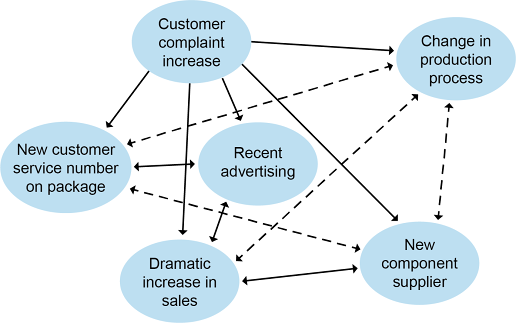

The waste hierarchy is a simple but powerful policy tool to help organizations design a reverse supply chain that prioritizes the most environmentally friendly disposition processes. Since the better methods are often also the more cost-effective options, this is a win-win. Waste, hazardous waste, and waste exchanges are addressed here.
📖 ASCM Definition — waste hierarchy:
The waste hierarchy is sometimes called the reverse logistics hierarchy or the four Rs. In order of importance, the Rs are reduce (use of resources), reuse, recycle, and recover (energy). Exhibit 5-32 shows the relationship of the four Rs and places an additional item, the least desirable option—disposal in a landfill—at the bottom. We'll look briefly at each of these activities to see why they are considered beneficial to business, society, and the environment.

Reduce Resource Use.
Reducing the use of resources in the first place is considered the most responsible option in the waste hierarchy. Companies can incorporate this principle into their business in the following ways:
📖 ASCM Definition — clean technology:
📖 ASCM Definition — 40/30/30 rule:
While this is a rule of thumb and could differ depending on the product, it shows how up-front work during the design of products and manufacturing processes and supplier selection will have big payoffs in waste reduction, which will lead to efficiency improvements and thus to higher profitability.
Reuse Products or Components.
Potential reuse of products or parts of products is considered second in importance to resource conservation. The payoff is a reduction of the costs involved in purchasing, transportation, and disposal. This can be accomplished in several ways.
Resell returned products that pass quality control, repackaging and relocating products as needed (to new selling locations, including resellers).
Donate excess inventory to charities as appropriate and allowed, which may provide a tax benefit. (For example, Habitat for Humanity, a charity that builds homes, is a common recipient of excess building materials.)
Remanufacture products to like-new condition by replacing worn parts with new parts and sell at a discount or as part of a trade-in program. This is especially appropriate for big-ticket items; for example, Caterpillar has a program like this for industrial equipment.
Sell byproducts to organizations that can use them as raw materials (discussed in detail elsewhere).
Design products so materials and components can be more easily separated for reuse. This is called design for disassembly and recycling.
In addition, intelligently designed product upgrades can extend the life of durable components if they are easy to install. Software upgrades delivered online, for example, extend the life of programs without requiring physical delivery. Such upgrades result in savings in the logistics network and for the consumer. Rechargeable batteries enable reuse of a battery that would otherwise need recycling.
Recycle Materials.
After resource conservation and reuse, recycling is the third most important aftermarket principle. The concept of recycling isn't easily separable from the concept of reuse, and, in fact, the two can be combined. When containers (bottles, barrels, totes, drums, etc.) are cleaned, sterilized, and filled again, they are reused. When containers are reprocessed into other products, such as landscaping materials, they have been recycled. When a product is broken down into components, some parts may be reused, some recycled, and some sent to the landfill. Recycling reduces disposal costs; reuse can reduce purchasing and transportation costs as well.
Recycling can run into problems when different regions enact different requirements, creating diseconomies of scale. Organizations are often forced to customize programs for multiple local areas, which entails different methods, different training, and so on.
Recycling requirements can also change. For example, a third-party recycling industry has not yet been developed for the lithium-ion batteries used in electric cars (such as Tesla). However, individual companies are reusing or recycling batteries. Volkswagen, for example, has a pilot battery recycling plant in Salzgitter, Germany. Since this market is growing fast, especially in Europe, there will soon be a huge number of electric cars reaching their end of life, and this issue will become critical. Advocating now for solutions at the federal levels of government would allow this process to be consistent.
Recover Energy.
Disposal with energy recovery doesn't put a product's physical materials or components back into service, but it can still provide benefits. "Trash to energy" facilities essentially harvest the energy contained in products that are no longer usable in their physical form. This results in savings for the community. Organizations might directly benefit from this practice as well, for example, by using oil that has already been used to the maximum extent as a lubricant as fuel to run generators. Some of the more modern trash-burning facilities in Europe have very low emissions. In addition to incinerators, energy can also be recovered from biodegradable materials by capturing the gases they release.
Dispose in Responsible Landfill.
📖 ASCM Definition — responsible landfill:
Some physical products must go to the landfill, but this is the least desirable option. Incineration is generally considered the preferable alternative. If the landfill is the only possible way to dispose of a product, it's still important to choose the best available one. Not all landfills are equal, so the final leg of a product's reverse journey should end in a responsible landfill that prevents degrading items from leaching into a water source or polluting the air.
📖 ASCM Definition — waste:
📖 ASCM Definition — total waste management (TWM):
Organizations that produce less waste have more of their cost of goods sold going into what the customer considers to be value-added. (Proper handling of toxic wastewater is an example of something that the customer indirectly pays for but does not value.) This is why the definition of waste discusses how waste "can usually be planned and somewhat controlled." Preventing waste in the first place is the best option for keeping an operation profitable. This is never more true than for hazardous waste.
📖 ASCM Definition — hazardous waste:
Hazardous material includes chemicals; wastewater; various forms of human and agricultural waste and sewage; radioactive, construction, electronic, and biohazard waste; and many other types. In many cases, hazardous waste is more than one type because multiple types of pollutants are mixed together. Some hazardous waste is relatively safe for humans but highly toxic to other organisms such as fish or bees.
Various government agencies enact regulations based on hazardous waste legislation. These agencies will monitor or audit organizations for compliance in addition to requiring reporting and record keeping. Monitoring and audits may include plant inspections, testing discharge sources at the point of discharge or in the local area (such as downstream from a river discharge point), or testing nearby groundwater.
Hazardous waste regulations also specify the means to be used for its transportation, storage, and disposal. These methods will differ by type of material. Necessary safety procedures take into account whether the waste could be explosive or corrosive, form a toxic gas cloud, and so on.
Compliance with hazardous waste regulations requires keeping careful records of what categories of hazardous waste are being processed along with a chain of custody that provides evidence that the materials were properly processed
Compliance with hazardous waste regulations requires keeping careful records of what categories of hazardous waste are being processed along with a chain of custody that provides evidence that the materials were properly processed. When it comes to disposal, options may include supervised incineration on site or transportation to a specially designated hazardous waste disposal site with the proper permits for handling the type of hazardous waste in question. Proof of delivery needs to be provided in reports and retained in archive records.
📖 ASCM Definition — Globally Harmonized System of Classification and Labeling of Chemicals (GHS):
While this system exists primarily for hazardous materials used in products, it does specify how to properly dispose of hazardous waste once the product has been used or is no longer needed. In either case, safety data sheets (SDS) indicate proper safety gear to use, what to do if exposure occurs, and the possible effects of any exposure on humans, animals, or plants. When products with hazardous ingredients are provided to consumers, the consumers also need to be educated as to their proper use and disposal. Note that there is a link to an example of an SDS in the Resource Center.
Strict waste regulations exist in the European Union and in many other places. Let's look at two regulations used in the EU as examples.
The Wastes of Electric and Electronic Equipment (WEEE) legislation in the European Union places the burden of disposing of computers, monitors, televisions, printers, and other peripherals on the manufacturers. Consumers can deliver the devices to the manufacturer, and the manufacturer cannot charge a fee. The manufacturer is required to properly identify and dispose of the materials. This legislation provides incentives to rely more on the higher activities in the waste hierarchy, for example, recycling before responsible landfill. A large number of U.S. states have similar "e-waste" legislation.
The EU's Restriction on Hazardous Substances (RoHS) Directive is aimed at the apex of the waste hierarchy—reduce—and the product development life cycle stage. It limits the amounts of lead, cadmium, mercury, hexavalent chromium, polybrominated biphenyl, and polybrominated diphenyl ether that new electrical and electric equipment can contain for it to be sold within the EU from any source.
Organizations can partner with regulatory agencies to make compliance easier. They can also exert lobbying influence on the regulations themselves or through an industry nonprofit association to ensure that the regulations are clear and easy to follow.
📖 ASCM Definition — waste exchange:
One organization's by-product or other type of waste may be another organization's raw material. Long ago, tanners would collect chamber pots around the community each morning to use when tanning leather, which provided a side benefit of reducing the amount of human waste flowing through the streets. Today, many organizations seek to sell their by-products or other waste at market rates, both generating revenue and reducing disposal costs. In the waste hierarchy, this would qualify as reuse of materials, so it is quite high on the scale of effective responses.
The second part of the definition of waste exchange reveals that organized information exchanges are the key to finding or creating a market for certain waste products. Tyson used to discard its chicken feet until it discovered that there was a huge demand for them in Asia. Now it ships these overseas. In fact, every part of the chicken is used for something. Even the feathers are baked and become a powder additive to pet food.
Nonprofit information exchanges exist on a regional basis to help connect buyers with sellers and thus create a market. Either party can specify what they have or need. Buyers may specify how frequently they need it and in what quantity. Transportation and handling could be part of the negotiated price; for example, a low-value waste product could be offered for free provided that the buyer pays for shipping and handling.